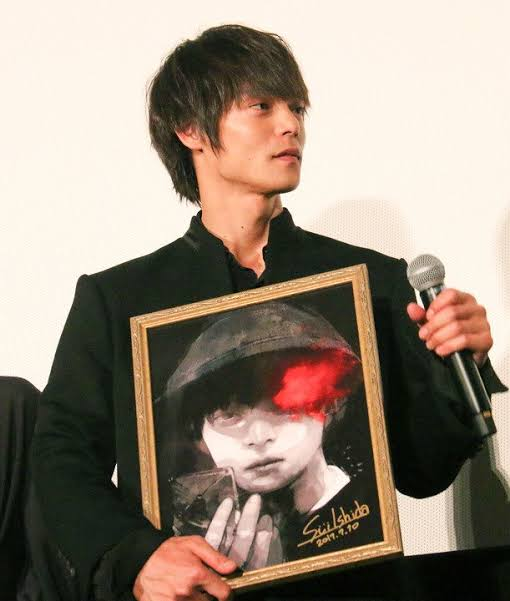

Tokyo Ghoul
A dark fantasy story following Ken Kaneki after an encounter transforms him into a half-ghoul, forcing him to confront two conflicting worlds.

MANGA ARTIST • WRITER
Sui Ishida is a Japanese manga artist best known for creating Tokyo Ghoul and its sequel Tokyo Ghoul:re, with works recognized for their dark atmosphere and psychological themes.
← Back to CreatorsSui Ishida is a Japanese manga artist known for creating stories that explore identity, humanity, isolation, morality, and the psychological struggles of their characters.
His breakthrough work, Tokyo Ghoul, became a major dark fantasy manga and was later adapted into anime and other media.
A dark fantasy story following Ken Kaneki after an encounter transforms him into a half-ghoul, forcing him to confront two conflicting worlds.
The continuation of the Tokyo Ghoul story, expanding its characters, conflicts, and exploration of the human-ghoul divide.
A superpowered action series centered on ordinary people whose lives change after gaining extraordinary abilities.